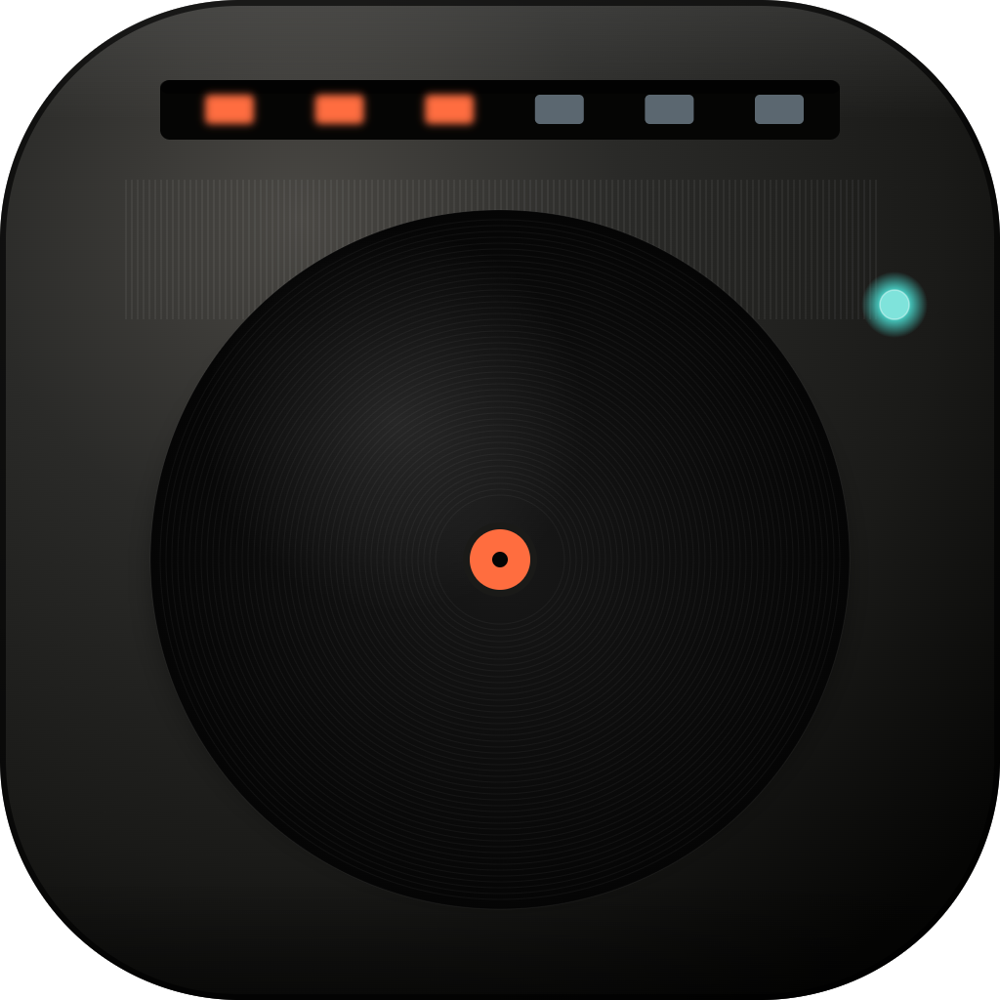
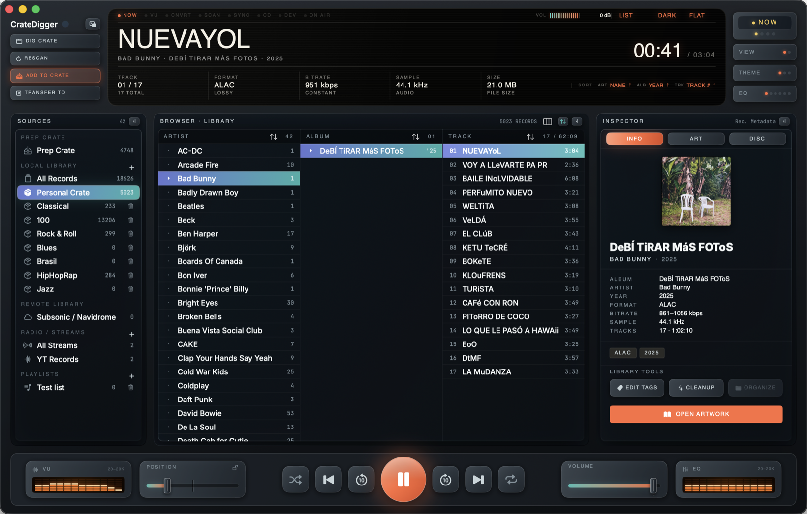
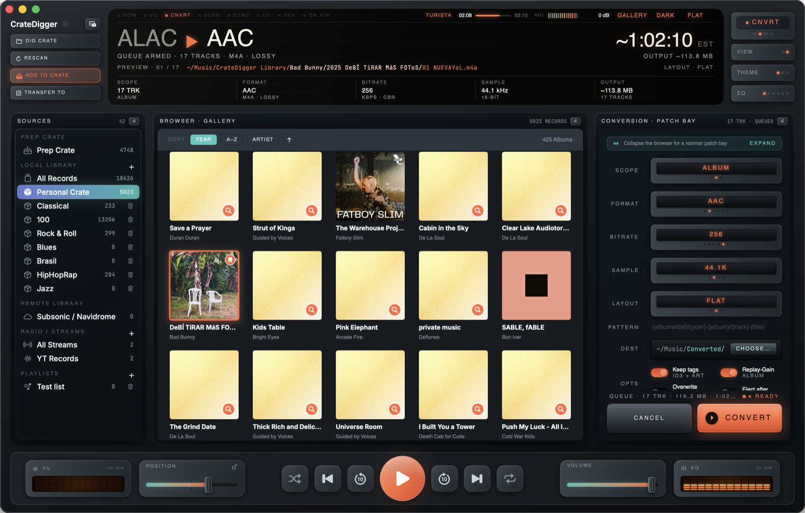
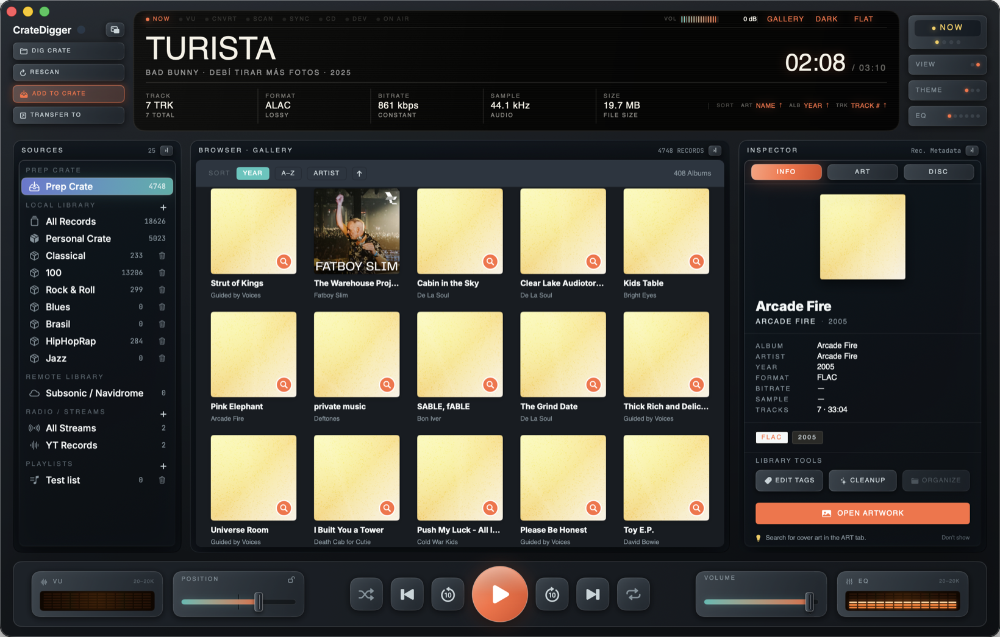
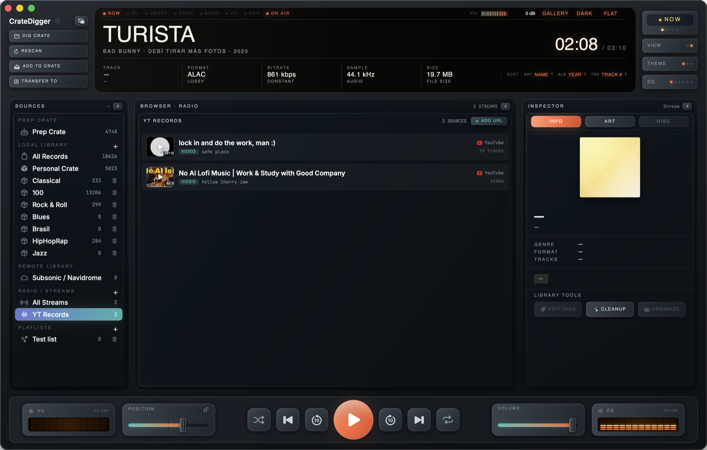
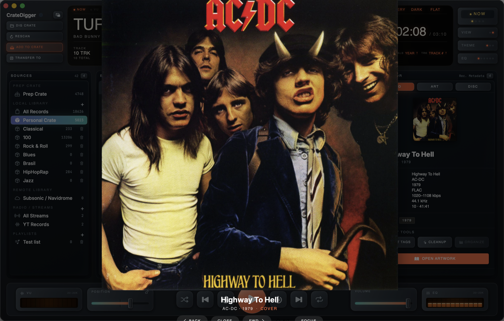

Bringing the fun back to managing your own offline music files. CrateDigger is a native macOS utility that pairs the tactile joy of hardware decks with an ultra-efficient, multi-threaded organization and batch-conversion engine.
The full source code lives on GitHub under the MIT license. And yes, it was vibe coded — but with intent and attention to detail, by a music hoarder, a fan of album artwork, and not so much a fan of streaming services.
View the Code on GitHub
Toggle between Carbon (Dark) and Linen (Light) modes and hover over the hotspots to tour the console.

Hover or click on the pulsing orange hotspots scattered on the console above to inspect CrateDigger's features and hardware components.
Inspired by physical retro-modern receivers, the glowing OLED center displays a high-fidelity readout. It tracks your playing track tags, audio format, live bitrates, sample rates, file size, and includes an LCD timeline scrub bar. Toggles let you swap views to VU meters, active folder scan status, and batch conversion queues.
Organize offline tracks into portable, lightweight crates (saved as pretty-printed JSON arrays in your local folders). The Prep Crate functions as a secure staging zone for scanning new files, ensuring you tag and review imports before copying them to your primary crates. Supports Subsonic/Navidrome libraries, CD audio ripping, and local playlist files.
Inspect nested audio tags and metadata details instantly. Resolves embedded artwork dynamically, searches local directories for cover assets, and pulls high-resolution covers from iTunes integration. Toggles between raw metadata fields and file-level info in secondary wells.
The bottom chassis hosts the mechanical audio control deck. Includes physical buttons for cue loops (A-B repeat), playlist advance, shuffle, and output-device selection. Integrates physical volume sliders, hardware-style EQ bands, and dual VU level meters for monitoring playback output.

CrateDigger's FFmpeg engine queues entire directories of mixed formats at once, using every core but one. Every destination path is planned before a single file is written.

Newly scanned folders land in the Prep Crate first — a staging area for tagging and review — instead of dumping straight into your permanent collection.
.cdlib JSON files
Paste a YouTube link and CrateDigger resolves it to a playable stream alongside your offline tracks — no separate app or browser tab.

The artwork inspector resolves embedded art, folder images, and remote iTunes covers into one hash-keyed store, then lets you browse it full-size.
We built CrateDigger because streaming services hide your music. It's time to own your files again.
Split one continuous vinyl-side rip into clean per-track exports. Auto-detects breaks from sustained silence, with a sensitivity slider and manual marker editing before you commit.
Push tracks straight to an iPod, USB drive, or phone with ⌘⇧T. CrateDigger detects connected devices and lets you browse and transfer without leaving your library.
Runs fully sandboxed with security-scoped bookmarks for every folder you grant access to. Every batch job checks destination write permissions and free disk space before it starts.
Rip physical CD audio tracks directly to FLAC or MP3. Connect to your Navidrome, Subsonic, or local streaming servers to sync remote crates and cache files offline.
No standard flat menus or sterile interfaces. Built with a rich Carbon/Linen design, the interface mimics physical audio chassis panels, complete with knobs, dials, and OLED displays.
Scrobble plays to Last.fm seamlessly with "now playing" indicators. Rich probing via FFprobe extracts sample rates, exact encoding channels, profiles, and hidden streams.
The landscape of offline music managers is either bloated or looks like a spreadsheet. CrateDigger bridges the gap.
| Feature | CrateDigger | Apple Music / iTunes | Foobar2000 | Plex / Navidrome | Swinsian |
|---|---|---|---|---|---|
| Batch FFmpeg Conversion | ✓ Yes (Built-in, Multi-threaded) | ✗ Single file only (AAC/ALAC) | ✓ Yes (Built-in converter + CD ripping) | ✗ No (On-the-fly streaming transcode only) | ✗ No (Playback-only, no transcoding) |
| Tactile Hardware Interface | ✓ Yes (Carbon/Linen Themes) | ✗ No (Modern flat list style) | ✗ No (Windows-classic sheet grids) | ✗ No (Responsive grid layout) | ✗ No (Standard native list/table UI) |
| Collision-Safe Path Renamer | ✓ Yes (Flat / Template / Mirror) | ✗ No (Forces proprietary folders) | ✓ Yes (Complex tag-scripts) | ✗ No (Requires prep-organized folders) | ✗ No (No batch export/rename) |
| Double-Tier Crate Staging | ✓ Yes (Prep Crate vs. Saved Crates) | ✗ No (Imports directly to main database) | ✗ No (Flat playlists only) | ✗ No (Monolithic library folders) | ✗ No (Flat/smart playlists only) |
| JSON Portable Libraries | ✓ Yes (Lightweight .cdlib files) | ✗ No (Locked in binary SQLite/XML db) | ✗ No (Proprietary database binary) | ✗ No (SQL databases on server host) | ✗ No (Proprietary internal library) |
| Native macOS Performance | ✓ Yes (AppKit/SwiftUI + Sandbox) | ✓ Yes (Native, but bloated) | ✓ Yes (Genuine native macOS build) | ✗ No (Electron client or web browser) | ✓ Yes (Native, lightweight) |
FFmpeg 6.x + FFprobe static compilation. Asynchronous execution blocks using ProcessCommandRunner pipelines.
Built exclusively for macOS 13+ (Ventura, Sonoma, Sequoia, Tahoe). Programmed using native Swift 5.10, AppKit bridging, and SwiftUI components.
Decodes FLAC, ALAC, WAV, MP3, AAC, AIFF, OGG, and M4A. Persists libraries via secure security-scoped bookmarks and lightweight .cdlib files.
Supports sandbox environments. Validates batch preflight destinations for write permissions and disk-space estimates prior to encoding runs.